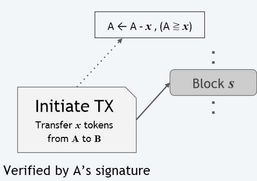
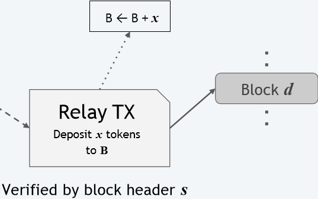
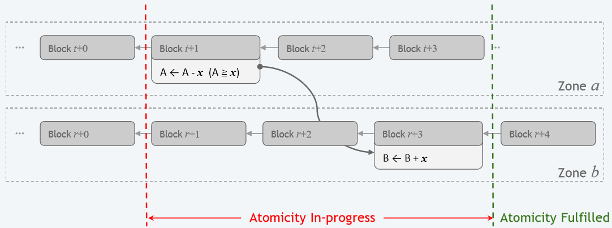

扩展区块链：
异步共识区
Scale out Blockchains with Asynchronous Consensus Zones
Jiaping Wang, Hao Wang
nsdi-19
dzf
背景知识
Gossip协议
六度分隔理论认为，如果平均每个人认识260人，则一个人最多经过六次朋友介绍就能认识全世界的人。
一个节点向全世界的节点散播消息？
背景知识
区块链系统
- 很多节点
完整节点、共识节点、储存节点、简易支付验证节点……
- 交易(transaction, txs, tx)
谁给谁多少钱，和一些额外的信息
- 区块(block)
一群有效交易的打包，和一些额外的信息
- 区块链(blockchain)
由区块构成的链，本质上是为了提高效率
背景知识
进行交易
- 广播交易
让其他节点承认并记住这次交易（暂存在交易池内）
- 创建候选区块
矿工选择交易池中的交易打包成候选区块
- 共识
优胜的矿工将候选区块广播，获得其他节点承认
- 疑难杂症
网络延迟、吞吐量低、区块链分叉、耗电、黑客攻击……
美中不足
- 所有的完整节点参与同一组Gossip协议通信。
- $一次共识的传输量 \geq k · 区块信息量 · 完整节点数$
- 扩展性不佳：$节点负担 ≈ k · 用户规模$。
- 效率不足：每轮共识能处理的交易数量与网络总算力增长无关。
分区！
- 将节点分区，每个区维护一条独立链
- 一个分区内节点足够多，区块链仍然可靠
- $一次共识的传输量 \geq k · 区块信息量 · \frac{完整节点数}{分区数}$
- 扩展性好：$节点负担 ≈ k · \frac{用户规模}{分区数}$。
分区规则
- 区域数量为$n = 2^k$
- 账户分区：账户地址的二进制前$k$位
- 交易分区：根据`from地址`的前$k$位
区域内交易
就像原版区块链一样！
不向区域外广播交易
不受其他区域的区域内交易影响
独立的广播、挖矿竞赛、共识、验证过程……
效果
👍应付用户增长：调节分组数量
👍维持去中心化：节点负担降低
🤔跨区域交易：？？？
🤔防攻击：诚实算力被分割
跨区域交易
交易分割
“区域a的A要给区域b的B转账$x$元”
分割为“A取款$x$元”，“B存款$x$元”
- “A取款$x$元”称为首发交易$\rho$
- “B存款$x$元”称为中继交易$\phi$
跨区域交易
区域a
- 验证A至少有$x$元
- 共识A的首发交易$\rho$
- 向区域b发送中继交易$\phi$

跨区域交易
区域b
- 接收中继交易$\phi$
- 访问区域a，验证首发交易
- 共识中继交易$\phi$

跨区域交易
最终原子性(Eventual Atomicity)

跨区域交易
最终原子性的安全确认
如果
- 区域a中，首发交易度过$n$次共识，并且
- 区域b中，中继交易出现在区块上
那么此跨区域交易就是安全(secured)的
对比比特币和以太坊……
异常处理
区块链分叉
由于网络延迟等原因，区块链出现不同版本
区块链系统会消解分叉
一些交易会作废！
引发一连串问题
异常处理
分叉消解算法
比特币采用最长链法则(The longest-chain rule)
以太坊使用GHOST协议
每个区块有三种状态：
- 有效的。没有分叉，或者区块处于优胜链上。
- 未知。当前区块处于竞争链上。
- 孤儿。区块处在落败链上。
无论区块处于什么状态，它的状态都可能发生改变
异常处理
首发交易可能失效
- 在首发交易所在区块被标记为有效前，
中继交易不加入新区块
- 若中继交易已经完成，必须暴力重构区域b
从创世交易开始，逐条执行有效交易
实践中会保留区块链的快照
异常处理
链式反应
中继交易失效，可能导致另一次首发交易无效
- 延迟中继交易的执行，直到完成$\lambda$次共识
- 更严格的首发交易条件：
假设前$\lambda$个区块中的中继交易无效
区域安全
诚实算力被分散？
各区域之间挖矿、共识是独立的
恶意节点集中算力占领一个区域？
区域安全
诸葛连弩式挖矿
允许一个PoW解应用到多个区域中
所有矿工的算力得到倍增
效果
👍应付用户增长：调节分组数量
👍维持去中心化：节点负担降低
👍跨区域交易：延迟共识；更严格的条件
👍防攻击：诸葛连弩式挖矿